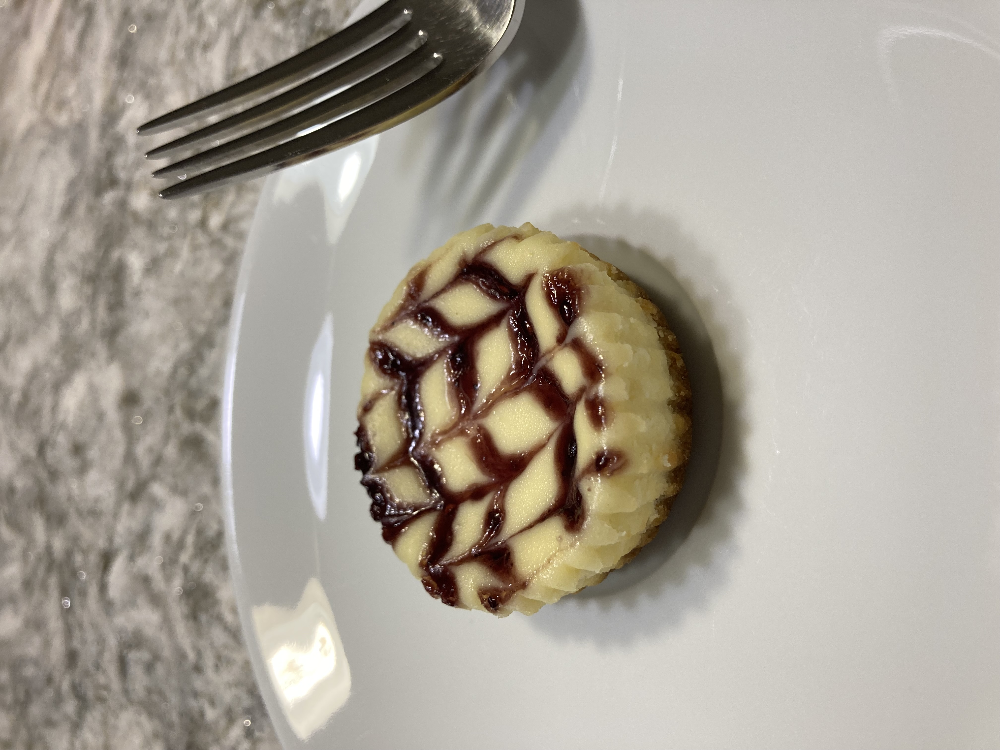
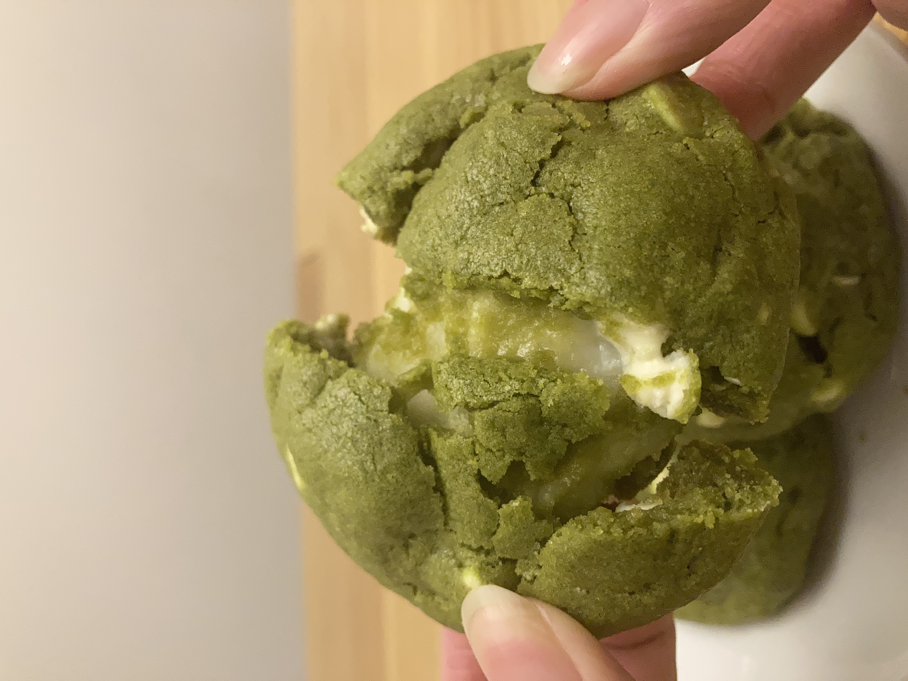
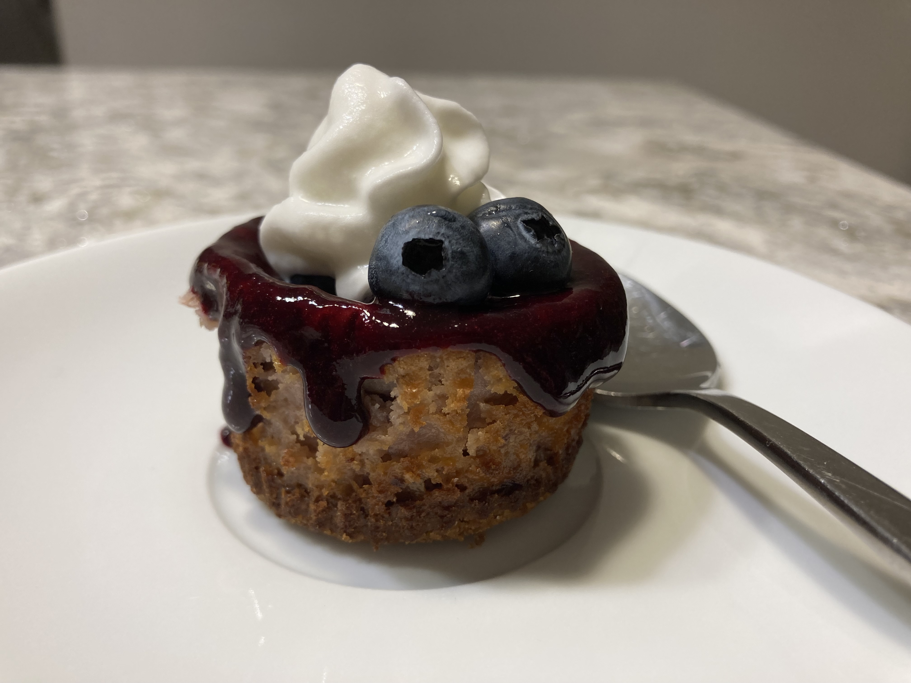
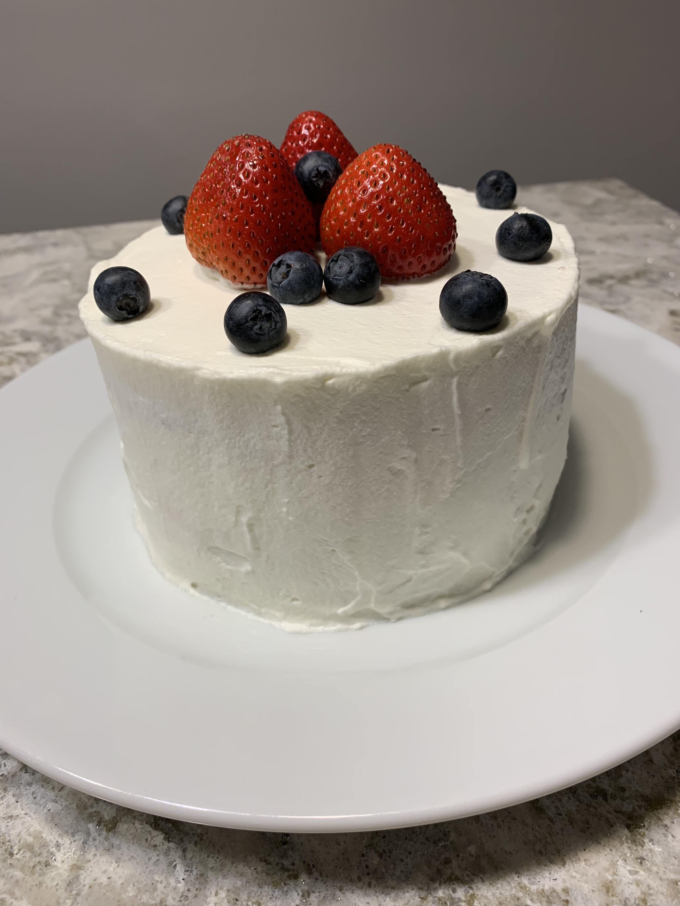

| Baby Raspberry Cheesecake~ Creating designs with the jam is fun | Kimchi Fries~ So good, and I don't usually make savory things |
|  | |
| Dango~ It was okay | Matcha White Chocolate Cookies Stuffed with Mochi~ The mochi melts in your mouth |
|
|
 |
| Baby Blueberry Cheesecake~ I think it's so pretty | Japanese Stawberry Shortcake~ Celebrate today just because |
|  |  |
Send me any recipe recomendations 😄
Music has also helped me through rough times. It is an outlet for me whether that be just listening, singing or playing.
Oye by TINI & Sebastián Yatra- This song saved me when I was stuck in my room when I had covid crying because I was about to miss my cruise(I actually ended up going because I tested negative the morning of the cruise😎)
Be Myself by Why Don't We- This song is about letting your heart guide you. Plus it's an easy song to mindlessly sing while I do work